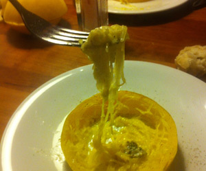

Überbackener Spaghettikürbis
5,5 von 6Spaghettikürbis in ca. 3-4 cm dicke Scheiben schneiden und die Kerne entfernen (Schale zwingend dran lassen). In einem grossen Topf die Kürbisscheiben in einer Gemüse-Bouillon ca. 20 Minuten kochen bis der Kürbis gar ist. Die Kürbisschnitze auf einem Blech auslegen. Mit einer Gabel das Kürbisfleisch lösen, sodass Spaghetti entstehen. Etwas Roquefort (oder Greyerzer), Salz, Pfeffer und Olivenöl über jeden Schnitz geben und im Ofen bei 200 Grad überbacken. Mit Brot servieren.
